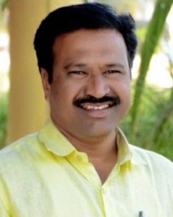

अल्फिया बँगल्सचे संस्थापक
स्व.श्री. मुनिरभाई हसनभाई मनियार
स्व. श्री मुनिरभाई हसनभाई मनियार हे मूळ निर्वी या गावचे. यांचा जन्म ०१ / जानेवारी / १९४८ साली झाला.
त्यांचे वडील स्व. श्री हसनभाई अब्दुलभाई मनियार हे उत्तम ताशावादक होते. आजही निर्वी गावात त्यांच्या या
कलेची खूप गाजावाजा होतो. यासोबतच त्यांचा बांगडीचा व्यवसाय देखील होता. हसनभाई मनियार यांना तीन मुले होती.
थोरल्या मुलाचे नाव स्व. श्री. कासमभाई मनियार, मधव्या मुलाचे नाव स्व. श्री. मुनिरभाई मनियार आणि धाकट्या
मुलाचे नाव स्व. श्री. शमशुद्दीन मनियार. हसनभाईंनी आपल्या तिन्ही मुलांना शिक्षणासोबतच ताशा वाजवण्याची
कला, आणि बांगडी
व्यवसाय अगदी शून्यापासून ते उत्कृष्ट दर्जापर्यंत शिकवले. मुनीरभाईंनी आपल्या वडिलांच्या कारोबारमध्ये थोडा
हातभार लावला . आणि त्यांच्या कडून ताशावाजवण्याची कला शिकून घेतली .
सण १९५९ साली मुनिरभाई मनियार हे लग्नाच्या बंधनात अडकले. त्यांच्या
पत्नीचे नाव सौ. बिस्मिल्हा मुनिरभाई मनियार यांचे माहेर हे मूळ लोणीचे. मुनिरभाईंनी आपल्या पत्नीला देखील
बांडगीचा व्यवसाय अतिशय योग्यरीत्या शिकवले.
मुनिरभाईंना तीन मुले आणि एक मुलगी अशी चार दाम्पत्य आहेत. मुलगी सौ.
रुकसाना अकबरभाई मनियार हे सध्या हिवरे बाजार सारख्या आदर्श गावात आपला संसार योग्य रित्या पार पाडत आहेत.
त्यांना एक मुलगी आणि एक मुलगा दोन्हींचे लग्न अगदी थाटामाटात झाले.

तनवीर टूर्स आणि ट्रॅव्हल्सचे संस्थापक
आणि पारगावचे सर्वोत्तम व्यापारी
श्री.शफीकभाई मुनीरभाई मणियार
शफिकभाई मनियार यांचा जन्म निर्वी या गावी १७ / मार्च / १९७६ साली झाला.
एक व्यक्ती सगळं काही करू शकत नाही. आपल्या घराचा खर्च, चार मुले यांच्या शिक्षणाचा खर्च, आणि इतर राशन
खर्च, घराची हि परिस्थिती लक्षात येताच स्व. श्री. मुनिरभाई मनियार यांचा थोरला मुलगा श्री शफिकभाई मुनिरभाई
मनियार यांनी वयाच्या १२ व्या वर्षी ऊर्जा दूध डेरी येथे ड्राइवर म्हणून काम सुरू केले, आपले चालू शिक्षण
पूर्ण करत ते ड्राइवर चे काम देखील पाहत होते.
वयाच्या २४ व्या वर्षी ते लग्नाच्या बंधनात अडकले, त्यांच्या पत्नीचे नाव सौ. मुमताज
शफिकभाई मनियार, हे मूळचे पुण्याचे. हे सध्या अल्फीया बँगल्स ची तिसरी शाखा सांभाळत आहेत.
तब्बल दहा वर्षानंतर शफिकभाईंनी ऊर्जा डेअरी येथील काम सोडले . आणि पारगाव गावचे प्रसिद्ध मेडिकल श्रीनाथ
मेडिकल येथे त्यांनीं तब्बल दहा वर्ष काम केले.
जवळ जवळ २० ते २५ वर्षाच्या कार्यकीर्दी नंतर त्यांनी दोन फोर व्हिलर घेतल्या आणि तनविर टूर्स अँड
ट्रॅव्हल्स या नावाने आपला स्वतःचा नवीन व्यवसाय सुरु केला. आणि आज गावामध्ये या व्यवसायाला प्रचंड प्रमाणात
प्रतिसाद मिळाला. यामुळे त्यांना आज गावामध्ये एक उच्च प्रकारचा दर्जा मिळाला.
शफिकभाईंना दोन मुले आहेत, आणि दोन्ही मुले शिक्षणाचे महेर घर ज्याला म्हंटले जाते
पुणे या ठिकाणी आपले शिक्षण पूर्ण करत आहेत.
त्यांचा थोरल्या मुलाचे नाव
कु.
शाहनूर शफिकभाई मनियार हा सध्या आझम कॅम्पस येथे कॉम्पुटर सायन्स चे शिक्षण
पूर्ण करत आहे. आणि आम्हाला सांगण्यात आनंद वाटतो की अल्फीया बँगल्स ची हि वेबसाइट शफिकभाईंचा थोरला मुलगा
कु. शाहनूर मनियार याने आपल्या अतूट परिश्रमांतून बनवली आहे.
शफिकभाईंचा धाकट्या मुलाचे नाव कु. तौफिक शफिकभाई मनियार हा देखील आझम कॅम्पस येथे बॅचलर ऑफ बिजनेस
ऍडमिनिस्ट्रेटर चे शिक्षण घेत आहे.

अल्फिया बँगल्सचे सह-संस्थापक
आणि दौंड तालुका राष्ट्रवादी काँग्रेस पार्टी
अल्पसंख्याक गटाचे उपाध्यक्ष,
श्री.चांदभाई मुनीरभाई मनियार
स्व. श्री मुनिरभाई हसनभाई मनियार हे मूळ निर्वी या गावचे. यांचा जन्म ०१ / जानेवारी / १९४८ साली झाला.
त्यांचे वडील स्व. श्री हसनभाई अब्दुलभाई मनियार हे उत्तम ताशावादक होते. आजही निर्वी गावात त्यांच्या या
कलेची खूप गाजावाजा होतो. यासोबतच त्यांचा बांगडीचा व्यवसाय देखील होता. हसनभाई मनियार यांना तीन मुले होती.
थोरल्या मुलाचे नाव स्व. श्री. कासमभाई मनियार, मधव्या मुलाचे नाव स्व. श्री. मुनिरभाई मनियार आणि धाकट्या
मुलाचे नाव स्व. श्री. शमशुद्दीन मनियार. हसनभाईंनी आपल्या तिन्ही मुलांना शिक्षणासोबतच ताशा वाजवण्याची
कला, आणि बांगडी
व्यवसाय अगदी शून्यापासून ते उत्कृष्ट दर्जापर्यंत शिकवले. मुनीरभाईंनी आपल्या वडिलांच्या कारोबारमध्ये थोडा
हातभार लावला . आणि त्यांच्या कडून ताशावाजवण्याची कला शिकून घेतली .
सण १९५९ साली मुनिरभाई मनियार हे लग्नाच्या बंधनात अडकले. त्यांच्या
पत्नीचे नाव सौ. बिस्मिल्हा मुनिरभाई मनियार यांचे माहेर हे मूळ लोणीचे. मुनिरभाईंनी आपल्या पत्नीला देखील
बांडगीचा व्यवसाय अतिशय योग्यरीत्या शिकवले.
मुनिरभाईंना तीन मुले आणि एक मुलगी अशी चार दाम्पत्य आहेत. मुलगी सौ.
रुकसाना अकबरभाई मनियार हे सध्या हिवरे बाजार सारख्या आदर्श गावात आपला संसार योग्य रित्या पार पाडत आहेत.
त्यांना एक मुलगी आणि एक मुलगा दोन्हींचे लग्न अगदी थाटामाटात झाले.

अल्फिया बँगल्सचे प्रमुख सदस्य
आणि पारगावचे एक उत्कृष्ट व्यापारी
श्री
तैय्यबभाई मुनिरभाई मनियार
स्व. श्री मुनिरभाई हसनभाई मनियार हे मूळ निर्वी या गावचे. यांचा जन्म ०१ / जानेवारी / १९४८ साली झाला.
त्यांचे वडील स्व. श्री हसनभाई अब्दुलभाई मनियार हे उत्तम ताशावादक होते. आजही निर्वी गावात त्यांच्या या
कलेची खूप गाजावाजा होतो. यासोबतच त्यांचा बांगडीचा व्यवसाय देखील होता. हसनभाई मनियार यांना तीन मुले होती.
थोरल्या मुलाचे नाव स्व. श्री. कासमभाई मनियार, मधव्या मुलाचे नाव स्व. श्री. मुनिरभाई मनियार आणि धाकट्या
मुलाचे नाव स्व. श्री. शमशुद्दीन मनियार. हसनभाईंनी आपल्या तिन्ही मुलांना शिक्षणासोबतच ताशा वाजवण्याची
कला, आणि बांगडी
व्यवसाय अगदी शून्यापासून ते उत्कृष्ट दर्जापर्यंत शिकवले. मुनीरभाईंनी आपल्या वडिलांच्या कारोबारमध्ये थोडा
हातभार लावला . आणि त्यांच्या कडून ताशावाजवण्याची कला शिकून घेतली .
सण १९५९ साली मुनिरभाई मनियार हे लग्नाच्या बंधनात अडकले. त्यांच्या
पत्नीचे नाव सौ. बिस्मिल्हा मुनिरभाई मनियार यांचे माहेर हे मूळ लोणीचे. मुनिरभाईंनी आपल्या पत्नीला देखील
बांडगीचा व्यवसाय अतिशय योग्यरीत्या शिकवले.
मुनिरभाईंना तीन मुले आणि एक मुलगी अशी चार दाम्पत्य आहेत. मुलगी सौ.
रुकसाना अकबरभाई मनियार हे सध्या हिवरे बाजार सारख्या आदर्श गावात आपला संसार योग्य रित्या पार पाडत आहेत.
त्यांना एक मुलगी आणि एक मुलगा दोन्हींचे लग्न अगदी थाटामाटात झाले.